01
Canettes Mizu
Réalisation de visuels pour les canettes d’une marque fictive, « Mizu ».
- Contexte
- Exercice en cours
- Outils

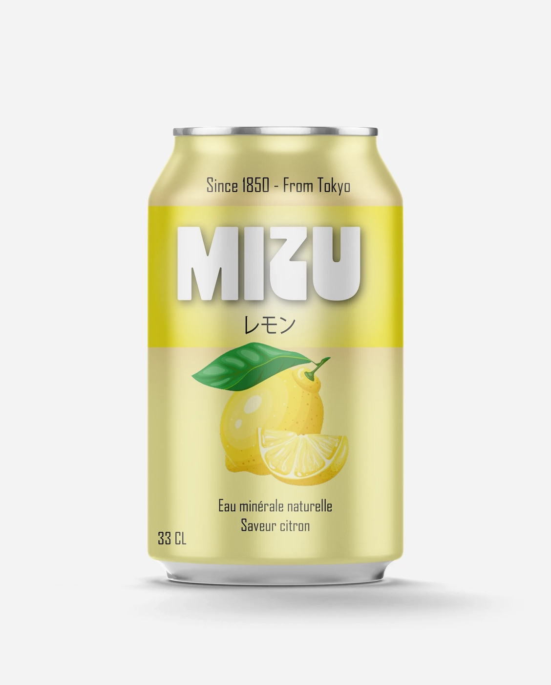
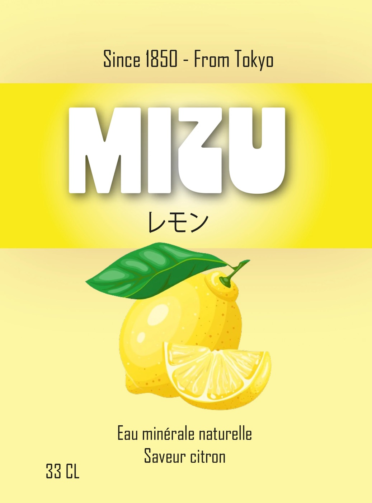
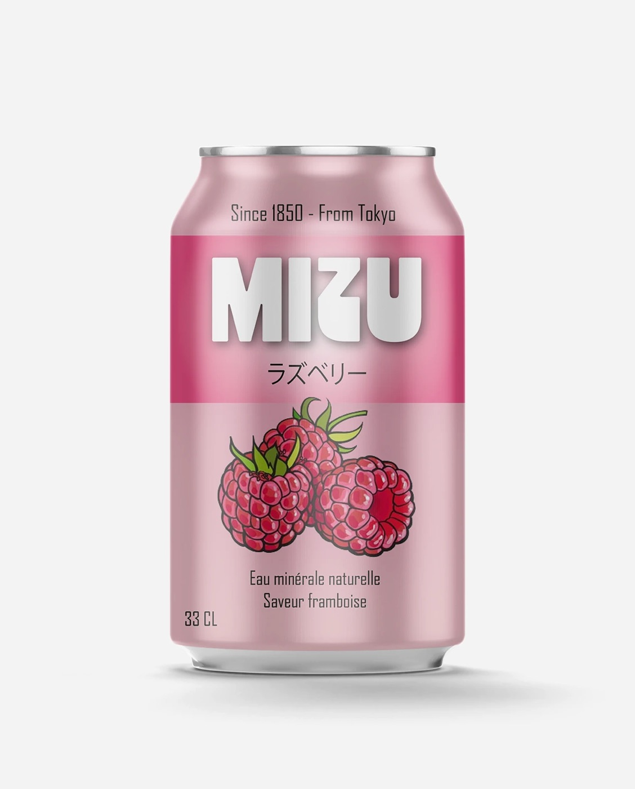
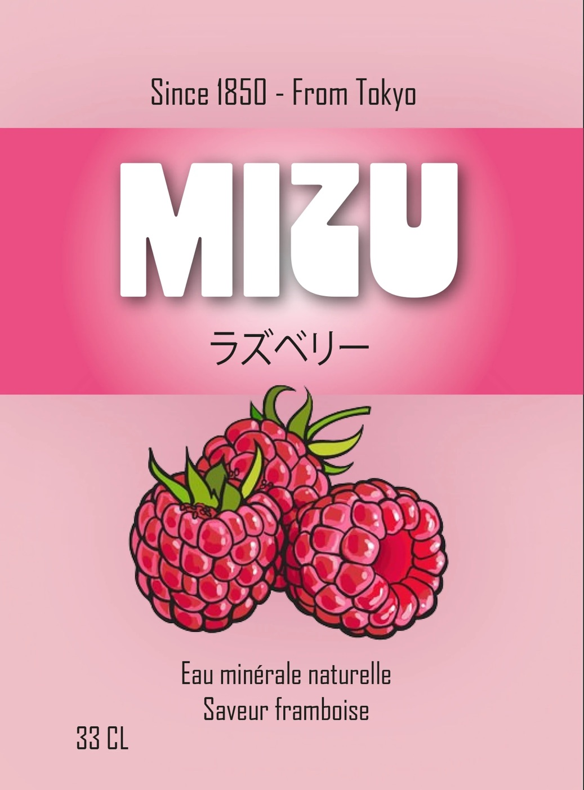
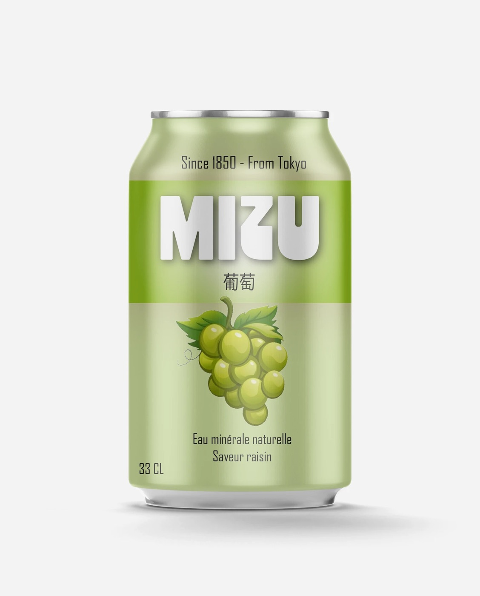
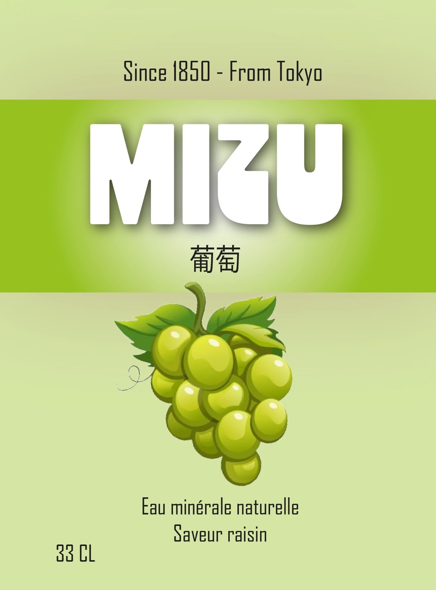
Glissez pour explorer
Réalisations · 05 / 06
Des emballages pensés de l'idée jusqu'au produit fini.
0 projets

01
Réalisation de visuels pour les canettes d’une marque fictive, « Mizu ».






02
Réalisation du packaging des pots de miel d’une marque fictive, « Enez ».
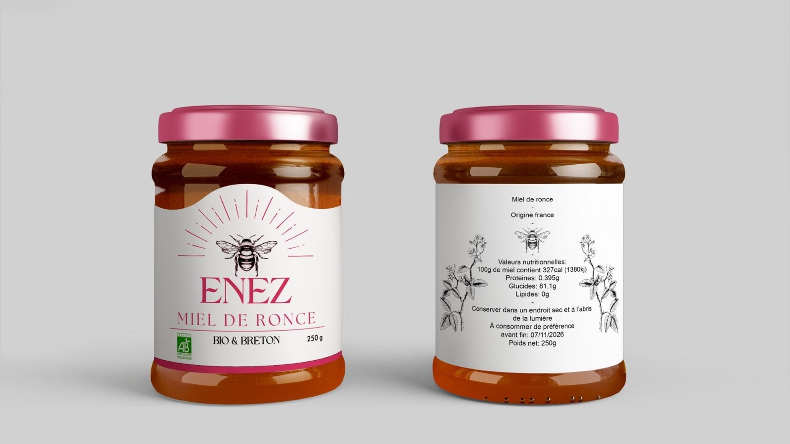
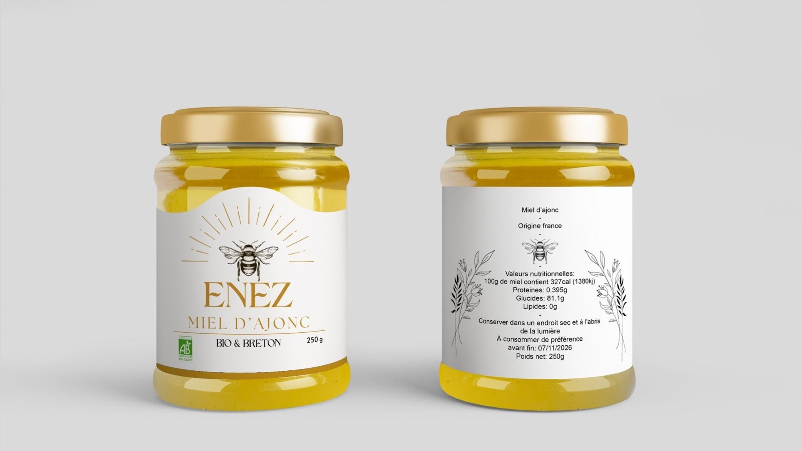
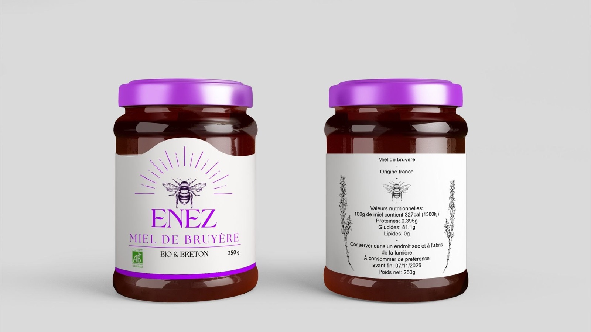
03
Voici une sélection de packagings que j’ai imaginés et réalisés pour la marque Pringles. Il s’agit d’un projet fictif : la marque, connue pour ses tubes, ne propose pas ce format de paquet de chips. J’ai trouvé intéressant d’imaginer à quoi elle pourrait ressembler sous cette nouvelle forme.
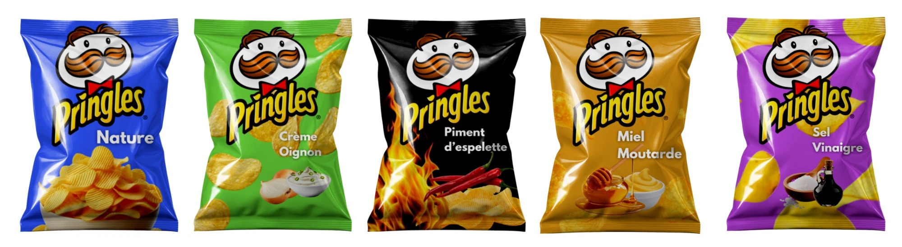
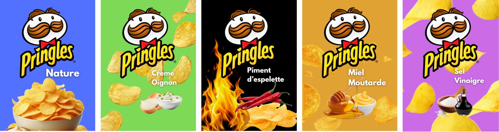